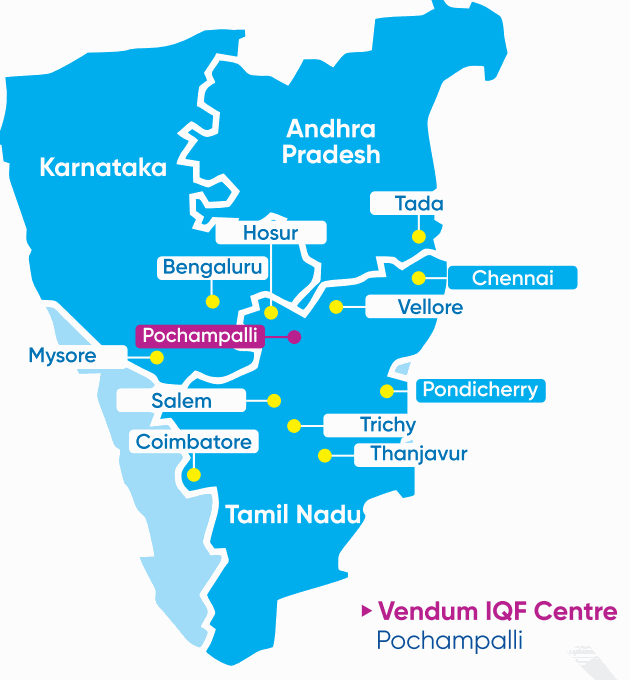

Cold Chain Network
Every order ships chilled straight from our Pochampalli IQF facility, reaching kitchens, stores and homes across three states without ever breaking the cold chain.
Currently Serving
